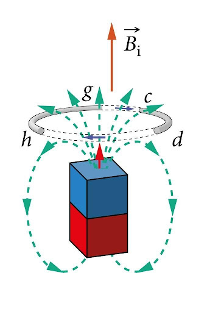
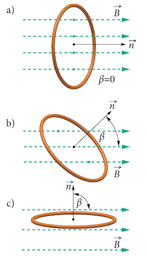
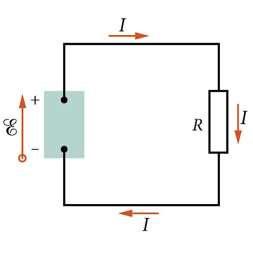

Magnetvoog, induktsiooni elektromotoorjõud ja Faraday induktsiooniseadus
 Elektromagnetilise induktsiooninähtuse avastas Michael Faraday 29. augustil 1831. Ta märkas, et raudsüdamikule mähitud juhtmepooli ühendamine vooluallikaga kutsub esile lühiajalise voolu ka teises, samale südamikule keritud poolis. Ta tegi veel mitmeid katseid ning üldistas siis saadud tulemused ja sai selgeks, mis olukordades induktsioonivool tekib ning millest sõltub selle suurus.
Magnetvoog
 Ka meid huvitab sama küsimus. Tahame teada, kuidas mõjutab induktsioonivoolu suurust juhtmekeeru asend või selle muutumine magnetvälja suhtes. Selleks võetakse kasutusele magnetvoo mõiste. Magnetvoog \(\Phi\) näitab, millisel määral läbivad magnetvälja jõujooned vaadeldavat pinda selle pinna suuruse ja asendi tõttu magnetväljas. \(\Phi = BS\cos \beta\). Magnetvoo mõõtühikuks SI-süsteemis on üks veeber (\(1Wb\)). Magnetvoog on kõige suurem joonisel \(a)\) ja puudub joonisel \(c)\).
Induktsiooni elektromotoorjõud
 Enne Faraday induktsiooniseaduse mõistmist, on vaja meelde tuletada ka elektromotoorjõu mõiste, mille tegelikult võttiski kasutusele M. Faraday kirjeldamaks laengukandjate liikumapanemiseks tehtavat tööd, et elektrivool vooluringis säiliks. Elektromotoorjõud iseloomustab vooluallikas toimivaid mitteelektrilisi jõude ehk kõrvaljõude. Näiteks elektrivoolu püsimiseks keemilist vooluallikat (patareid või akut) sisaldavas vooluringis tuleb vooluallika plussklemmilt läbi vooluringi miinusklemmile jõudnud positiivsed laengukandjad viia läbi vooluallika uuesti plussklemmile (vastu elektrijõu suunale). Elektromotoorjõud \(\varepsilon\) on võrdne kõrvaljõudude tööga ühikulise suurusega laengu ühekordsel läbiviimisel kogu vooluringist. \(\varepsilon=Akq\)
Induktsiooni elektromotoorjõuks nimetatakse tööd, mida juhet liigutav kõrvaljõud teeb ühikulise positiivse laengu ühekordseks läbiviimiseks vooluringist.
Faraday induktsiooniseadus
Nüüd oleme valmis panema kirja elektromagnetilise induktsiooni põhiseaduse.
Faraday induktsiooniseadus ütleb, et juhtmekontuuris tekkiv induktsiooni elektromotoorjõud on võrdeline
magnetvoo muutumise kiirusega.
Lihtsamalt öeldes:
Induktsioonivool ja ka vastav elektromotoorjõud on seda suuremad, mida kiiremini magnetvälja
muutus juhtme suhtes toimub.
NB. Muutust saab esile kutsuda kas magnetit või juhet füüsiliselt liigutades, kuid sama efekti saab tekitada ka voolutugevuse ja suuna muutusega näiteks vahelduvvoolu abil. Nii tekib olukord, kus visuaalselt meile tundub, et miski ei muutu, kuigi tegelikult pöördub magnetväli kogu aeg ümber ja indutseeritakse vool lähedalolevas juhtmes. Seda ongi näha videos
Katseta seadust simulatsioonis